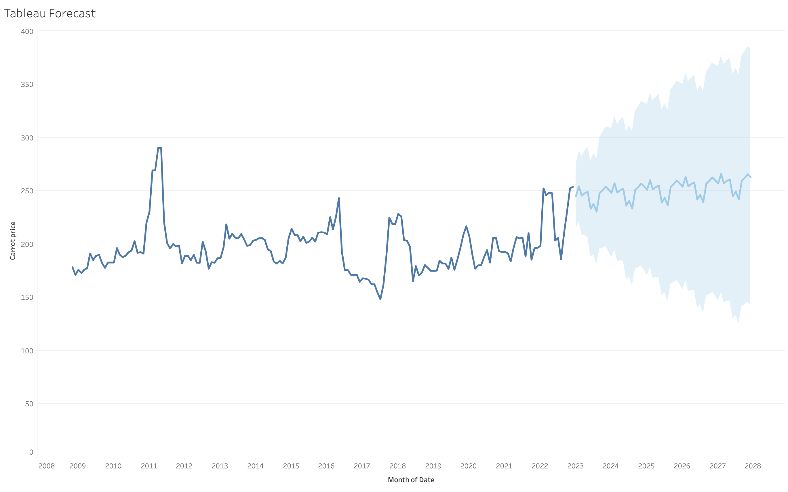
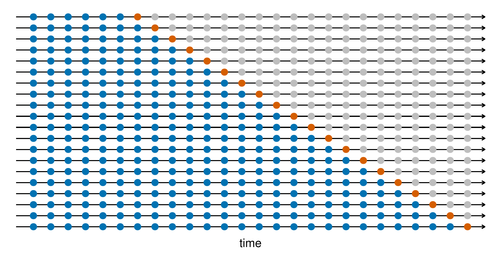
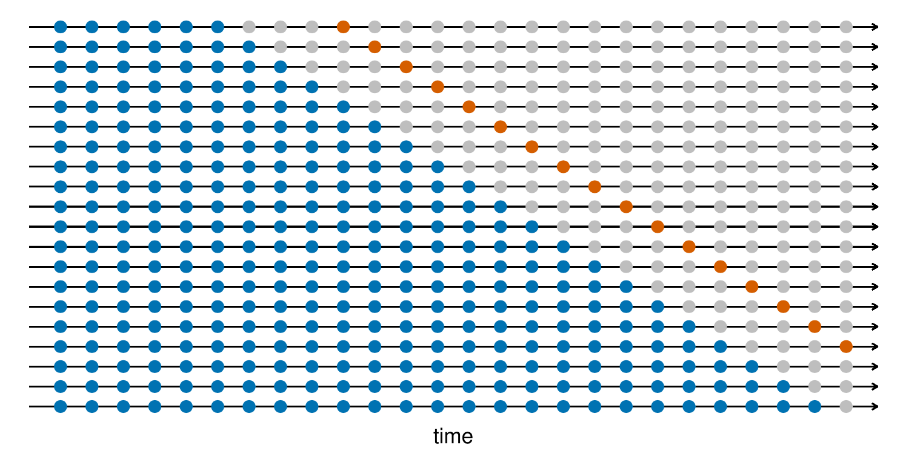

Review regression analysis
Forecast prediction intervals
Advanced forecasting I: Additive vs. Multiplicative models
Advanced forecasting II: Cross-validation
Project 1 reminder and details
Which value indicates whether the estimated relationship between carrot prices and time is statistically significantly different from zero?
A. 0.0728323
B. 189.513
C. 0.0288396
D. 0.0204868
What are prediction intervals?
The interval within which we expect
values of our \(y\) variable to lie at
a given point in time.
Our forecast from last week predicted that carrot prices will be 207.721 250 months after the financial crisis.
We recognize that it is incredibly unlikely for us to perfectly predict carrot prices in twenty years…
Instead, what if we construct a range of estimates that we are pretty confident encompasses the true value of carrot prices?
Perhaps we are reasonably sure the true price will be between 160 and 280…
The intuition for prediction intervals begins with understanding confidence intervals:
What are confidence intervals (CIs)?
A range of values that describe the uncertainty of an estimate of a parameter (\(\beta_1\)). Recall the regression equation: \(Y_i = \beta_0 + \beta_1X_i + \varepsilon_i\)
Similarly to p-values, CIs give us information on whether estimates are statistically significantly different from zero: Does the interval include 0?
CIs go beyond p-values and give us the range of possible values representing the correlation between \(X\) and \(Y\).
How are confidence intervals calculated?
How are confidence intervals different from prediction intervals?
Prediction intervals are concerned with bounding our predictions.
Prediction intervals are always wider than CIs because of the added uncertainty involved in predicting a single response versus estimating the mean response.
Prediction intervals increase as we try to forecast further in the future.
The most frequently used prediction (and confidence) interval is 95%.
The intuitive interpretation: We are 95% confident that our prediction interval contains/encompasses the value of our outcome variable that will be realized.
In Tableau (and most other software) prediction intervals are shown with shaded regions around the prediction.

Which of the following best defines confidence intervals?
A. A range of values that is likely to contain an unknown population parameter with a specified level of confidence.
B. A range of values that represents the mean of a sample.
C. A range of values used to estimate a future value of a variable with a specified level of confidence.
D. A range of values that is used to test a hypothesis about a population parameter.
Which of the following best defines prediction intervals?
A. A range of values that is likely to contain an unknown population parameter with a specified level of confidence.
B. A range of values that represents the mean of a sample.
C. A range of values used to estimate a future value of a variable with a specified level of confidence.
D. A range of values that is used to test a hypothesis about a population parameter.
Which of the following best describes the difference between prediction and confidence intervals?
A. Confidence intervals estimate future values of a variable, while prediction intervals estimate population parameters.
B. Confidence intervals estimate population parameters, while prediction intervals estimate future values of a variable.
C. Confidence intervals are used for small sample sizes, while prediction intervals are used for large sample sizes.
D. Confidence intervals are used for large sample sizes, while prediction intervals are used for small sample sizes.
E. Confidence intervals and prediction intervals are the same thing.
Prediction intervals require a few inputs and assumptions.
The formula for a 95% prediction interval for the \(h\)-step forecast is:
\[\text{Prediction Interval for }{y}_{T+h|T} = \widehat{y}_{T+h|T} \pm 1.96 \cdot \widehat{\sigma}_h\]
where
\(\widehat{y}_{T+h|T}\) is our prediction of \(y\) \(h\) periods into the future
\(h\) represents the forecast horizon, or the specific number of intervals (e.g., days, months, years) from the last observed data point
1.96 is the multiplier for a 95% prediction interval assuming that our sampling distribution of future observations is normal
\(\widehat{\sigma}_h\) is an estimate of the standard deviation for the \(h\)-step forecast
The equation for a prediction interval can be written more generally as: \[ \widehat{y}_{T+h|T} \pm c\cdot \widehat{\sigma}_h \]
where the multiplier \(c\) depends on the prediction interval you desire:
| Percentage | Multiplier |
|---|---|
| 80 | 1.28 |
| 85 | 1.44 |
| 90 | 1.64 |
| 95 | 1.96 |
| 99 | 2.58 |
Note that these all assume a normal distribution of future observations.
When forecasting 1 step ahead (\(h=1\)), we will estimate the standard deviation of the forecast distribution according to:
\[ \widehat{\sigma} = \sqrt{\frac{1}{T-K-M}\sum^T_{t=1}e^2_t} \]
where,
\(K\) is the number of parameters estimated in the forecasting method
\(M\) is the number of missing values in the residuals
\(e_t\) is the residual at time \(t\) (recall your decomposition…)
When forecasting \(h\) steps ahead (\(h\geq 1\)), we can estimate the standard deviation of the forecast distribution according to:
\[ \widehat{\sigma}_h = \widehat{\sigma}\sqrt{h} \]
Note that there are many other methods for estimating the standard deviation of the forecasting distribution.
This formula is for the Naïve method, and is among the simplest.
In lab this week, we will show you how to estimate prediction intervals in R and plot them in Tableau.
There are two types of forecasting methods you can use to construct forecasts in Tableau: Additive and Mutliplicative.
These are known as classical decomposition methods, and are estimated according to:
Additive: \(y_t = T_t + S_t + R_t\)
Multiplicative: \(y_t = T_t \times S_t \times R_t\)
Note there are a few other options for forecasting using decompositions, but we won’t cover them in this class.
This is a useful resource for more information on these methods and others: https://otexts.com/fpp3/classical-decomposition.html
The objective:
We want to show our audience
that they should trust our predictions.
The solution:
Time series cross-validation
Construct a series of “training” and “test” sets of data.
Use your “training” set to construct a forecast (following the same methods in your main forecast).
Evaluate the accuracy of your forecast using your “test” set.
Training data = blue
Test data = orange

Training data = blue
Test data = orange

Once you have constructed estimates for your series of test and training data, you can measure/summarize forecast accuracy using:
Mean Forecast Error (MFE)
Mean Absolute Error (MAE)
Root Mean Square Error (RMSE)
Mean Absolute Percentage Error (MAPE)
Choose the forecasting model that minimizes prediction error according to these measures.
This is a useful resource for these evaluation methods: https://medium.com/analytics-vidhya/basics-of-forecast-accuracy-db704b0b001b
Groups of 2
Choose an ag biz or enre management question to answer with time series data
Collect time series data
Analyze trends
Generate a forecast
\(\rightarrow\) Generate prediction intervals
Present results in a recorded video
I am currently growing almonds and walnuts, and in the coming season I will plant a new orchard.
Almond trees need to mature for 3-4 years before they are ready for harvest.
Walnut trees need to mature for 4-7 years before they are ready for harvest.
Both trees will continue producing for roughly 25 years.
How will I decide which trees to plant?
DATA: Time series data on almond and walnut prices.
ANALYSIS: Forecast prices for the next 10 years (really 25 would better answer your Q, but is probably too long of a prediction period)
ANSWER: I will plant walnuts because over a 10 year horizon they would yield higher revenues than almond trees, even though I would have to wait longer before selling them.
Your presentation videos should be roughly 8 minutes. (Minimum: 6 min, Maximum 9 min)
You should begin your presentation with the following:
Who are you? (what business, organization, etc. wants an answer to your question?)
Who is your audience? (business executive team, policy makers, consumers?)
You should then:
Give us any relevant background info that is necessary to understanding your question
State your question
Data:
Describe where your data is from
Provide summary statistics and visualizations
Analysis:
What forecasting model did you use? Why?
Show your forecast and prediction intervals
Discussion/Conclusion:
How did you use your forecast to answer your question?
What are the key take-aways for your intended audience?
What are limitations to your analysis?
The video presentation is part 1 of the project.
A report summarizing the presentation content is part 2 of the project. Your report should summarize the same information as your presentation, and can include additional information and visualizations if they are helpful for answering your question.
Each group member will be responsible for uploading the report onto their Google site. You can both have an identical report, but must post it to your personal webpage.
Hyndman, R.J., & Athanasopoulos, G. (2021) Forecasting: principles and practice, 3rd edition, OTexts: Melbourne, Australia. https://otexts.com/fpp3/. Accessed on 02-28-2023.
A useful blog post: https://mins.space/blog/2020-07-30-forecasting-through-decomposition/
Another useful blog post: https://medium.com/analytics-vidhya/basics-of-forecast-accuracy-db704b0b001b